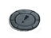
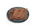
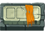
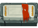
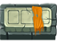
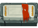

| Message | Meaning |
|---|---|
| You feel excited. | vault |
| You feel truly excited. | greater vault |
| You sense a certain tension. | room full of monsters |
| You sense the death of an innocent being. | Cute Dog has just been killed |
| You feel a surge of power. | artifact, guarded by a named monster |
| You hear a distant wind. | vortex |
| You hear a distant "Hurumph!" | Dorn Beast |
| *THUMB* | titan or greater moloch |
| You hear a horrible unearthly wail in the distance! | Banshee |
| You see a small hole in the ground. | hive |
| Something is moving in the hole beneath your feet. | hive creature is trying to emerge while the PC is standing on the hive |
| The whole dungeon level seems to be shaking. | hive creature tried to emerge from a hive and was not successful [1] |
| You nearly fall into a small hole in the ground. | hive in the dark |
| You see a crumpled hole in the ground. | empty hive |
| The floor is very rough here. | empty hive in the dark |
| You hear clicking sounds. | ants |
| You hear buzzing sounds. | bees |
| You hear an evil hissing and something large crawling about the ground. | giant ant queen |
| You hear a vile buzzing sound! | giant bee queen |
| You hear a slurping sound. | spider spun a web |
| You hear a ripping sound. | web was torn apart |
| You hear a burping/popping sound. | breeder just bred |
| You hear a grinding sound. | something just dug through stone |
| You sense imminent danger... | chance of out-of-depth danger generation |
| ... but the feeling passes. | but it didn't happen |
| You sense a rupture in the spiritual aura of this place. | (greater) moloch smashed an altar |
| You feel the presence of a friend. | companion was generated out of LOS – in a dark room, for example |
| Someone shouts: "*Yippiyaiyay!*" | Tywat Pare has found a bandit |
| You sense an imminent and blood-chilling threat... | boss monster |
| You sense the forces of nether approaching! | vile spirit |
[1] It will be followed by messages that indicate the reason, for instance "The center of the earthquake seems to be directly beneath your feet!" which means the PC is standing on the hive. There are other messages that need to be compiled regarding other monsters standing on the hive, etc.
| Message | Meaning |
|---|---|
| You hear the wind howling. | forge |
| A lot of stuff seems to be standing around here. | PC is standing at a forge's location in the dark |
| You sense a pious aura. | altar |
| You stumble against some stone block. | PC is standing on an altar in the dark |
| You hear someone counting money. | shop |
| You hear someone cursing shoplifters. | |
| You hear the chime of a tiny bell. | |
| You hear arcane mumbling. | shop being restocked |
| You hear a deep sigh. | follows preceding message if shopkeeper has run out of money |
| You feel observed. | invisible PC has been detected by a shopkeeper who is out of LOS |
| You hear splashing sounds. | pool (note similarity to acid trap below) |
| Your feet suddenly feel wet. | pool in the dark or while blind |
| You hear the sound of rushing water! | river (note similarity to water trap below) |
| You hear the sound of falling coins. | royal treasury |
| You hear the steps of the royal guard. | |
| You suddenly feel the urge to get very rich really soon! | royal treasury (while wearing an amulet of greed) |
| Something shifts beneath your feet! | PC entered the top level of the Pyramid while blind or while the stairway is covered in darkness |
| You sense something of historical significance. | statue |
| You feel a surge of pulsing power! | disconnected room full of monsters containing an artifact, with out-of-depth named guardian |
| You hear a violent grating sound! | dungeon shifts |
| A whole section of the dungeon <direction> of you shifts to the <direction>! | |
| A whole section of dungeon shifts to the <direction>! Everything is shaking violently! | |
| A solemn aura permeates this area. | legend statue |
| You shiver in anticipation of something special that you feel is going to happen. |
| Message | Meaning |
|---|---|
| You hear a splashing sound. | acid trap was triggered |
| You hear the sound of rushing water. | water trap was triggered |
| You hear a strange "ZAP!" | light trap (also possibly a flash/stun door trap) was triggered |
| You hear a pained -foo sound- in the distance. | spear or arrow trap was triggered |
| You suddenly sense taint in your vicinity. | corruption trap was triggered |
| You sense a soul in agony. | |
| You hear the sound of toppling stones. | stone block trap was triggered |
| You hear a thundering explosion. | fireball trap was triggered |
| You hear a squeaking sound. | alarm trap was triggered |
| The -foo- seems to move very carefully. | monster (or companion) encountered a trap |
| You shudder. | trap-filled room is somewhere on the level |
| You hear a strange rummaging sound in the distance! | trap was created by a monster |
| Message | Meaning |
|---|---|
| You feel watched. You shiver. You shiver really bad! | Gremlin Cave |
| The air of this level is filled with a strange smell. | si level |
| You hear someone chuckling evilly. | underground level of the Dwarven Graveyard |
| You smell the reek of sulphur, steel and oil. | Darkforge |
| The air suddenly is filled with the stench of death. The stone is colored strange gray shades and everything seems to be decaying, rotting dying slowly. | CoC Graveyard |
| This dungeon is very dusty. | second level of the Assassin's guild |
| Water drips constantly from the ceiling... | Water Temple |
| This whole level seems to be filled with emotions of terror, sorrow, pain and death... | Banshee level |
| Stormy winds howl through these tunnels. | Air Temple |
| This level is intensely hot! The rocks are glowing... | Fire Temple |
| You sense an intense tension. | battle bunny level |
| This level seems somehow removed from the rest of the world." | Cat Lord level |
| The walls seem to be closing in... | Earth Temple |
| This part of infinity seems to be special in a very eerie way. You wonder whether you would be able to find it ever again... | SIL (I:66) |
| The walls and floor of this level are filled with the marks of huge reptiles... hundreds of such marks. | final level of the Blue Dragon Caves |
| You feel touched by the forces of chaos... | lair of the Emperor Moloch |
| Some strange energy fills the air causing your skin to itch. | Mana Temple |
| This level is covered with a very slippery layer of ice. | D: 49 |
| This level is very strange... the walls are hard to see, everything seems to blur and you feel slightly dizzy. | D: 50 |
| You enter rather unremarkable cave complex. An easy wind is going and you feel that life is rife with new experiences to make! | Unremarkable Cave |
| You sense death looming... your sixth sense tells you to leave quickly! | Antediluvian Dungeon |
| Message | Meaning |
|---|---|
| You hear a sliding sound. | PC kicked an object on the floor in the dark |
| Oh my, I'm so lonely and need some company. | random, any NPC can say this, small lawful boost if the PC agrees to spend time with the NPC |
| You feel a great wave of relief rushing through these tunnels. | Jharod has healed Yrrigs while both are out of LOS |
| Jharod, the healer, suddenly seems to touch someone in a soothing way. You feel a great wave of relief rushing towards you." | Jharod, in LOS, has healed Yrrigs, out of LOS |
| You suddenly feel ancient magical energies manifest in your vicinity. | PC has just achieved experience level 13; the papyrus scroll has been generated, which is an invitation to enter the Pyramid (section 2.9). Alternatively: |
| You suddenly feel ancient magical energies manifest at your feet. | same as above, but the papyrus scroll was generated on the dungeon tile where the PC is standing |
| Your equipment suddenly seems to weigh less. | item has disappeared from inventory, most likely a food item susceptible to rotting – this includes corpses, apples and pieces of raw meat |
| Your -foo- starts to rot! | food item in the inventory has started to rot (which means it has changed from uncursed to cursed status) |
| Your -foo- rots away! | cursed food item in the inventory has rotted away; the difference between this message and "Your equipment suddenly seems to weigh less." may be Perception dependent or may involve other factors |
| You feel a change of mind in a being close to you. | pet has become hostile |
| You feel like scum. OR You feel like a traitor. | PC sacrificed a pet |
| Your mood darkens. | PC has lost blessed status |
| For a moment you feel dizzy. | monster tried to teleport to the PC's location |
| You hear a thudding sound. | thrown rock landed without being destroyed OR a wounded monster died after running out of LOS |
| You feel responsible. | PC killed a ratling guardian |
| You feel a horrible loss. | Cute Dog transformed into a writhing mass of primal chaos |
| You smash the stones to pieces. Some stuff buried in the rock in uncovered! | PC dug through stone, uncovering an item dropped by a monster that was killed while in the wall |
| The altar is smashed by the greater moloch! An energy bolt strikes down on the greater moloch! The greater moloch shruggs it off and laughs with malicious glee! | self-explanatory |
| *SORRY, MISSED* | the above happens, but the PC is doomed; the god strikes at the PC by mistake |
| You hit something and notice a thudding sound. | PC killed an invisible monster with a missile |
| Drops of blood appear on the ground. | invisible monster is bleeding |
| The stairway is very long... | generation of a dungeon level took a little bit longer; unnoticeable on faster machines |
| Tile | Type | Caret | Effect |
|---|---|---|---|
| Acid [1] | green | Damages the PC and damages or destroys non-artifact worn equipment. |
|  | Alarm | orange | Warns every monster on the level of the PC's presence and causes them to become hostile; disarm with potion of oil. |
| Arrow [1] | white | Shoots an arrow at the PC; can be exploited to gain arrows; there is more than 5% chance to be hit, in which case the arrow does 1d10+2 - PV damage, 1/3 is chance for the arrow to not break, and 1/30 chance for the trap to vanish. |
| Ceiling [2] | dark blue | Drops a portion of the ceiling on the PC; found on levels with forbidden teleportation replacing teleportation traps. |
| Corruption | purple | Corrupts the PC; a relatively small effect (~55 CP). | |
| Fireball [1] | red | Generates a fireball at the location of the trap. |
| Light | yellow | Blinds the PC. |
|  | Simple Pit | brown or cyan [3] | PC falls into a hole; can be used to train Climbing and Dx; deals 3d6 damage; if discovered and Dx>23, trap is always avoided and Dx is trained. |
| Pit with vipers | brown or cyan [3] | (Ma/500)% chance is to avoid the trap entirely WITHOUT discovering, trains Ma. Dx/40 is chance to avoid falling in pit, vipers still come out. 2d6 vipers spawned. | |
| Spear [1] | brown | Shoots a spear at the PC; can be exploited as a source of metal. | |
| Stone block [2] | gray | Drops a stone block on the PC; can kill low level PCs; (Ma/500)% chance to avoid entirely without discovering, this trains Ma. Damage is 4d10-PV, 50% chance to create rocks. | |
| Teleportation | light green | Teleports the PC; sometimes handy for on-demand teleportation. | |
| Water | blue | Causes a gush of water; can destroy scrolls if the PC does not have a waterproof blanket to protect the backpack; rusts vulnerable armor and weapons; unavoidable besides Alertness & Sixth Sense. |
[1] Eventually runs out and dissappears.
[2] Dissappears once triggered.
[3] When unopened, this trap is cyan, when the pit has been revealed it becomes brown.
It should be noted that traps affect monsters as well as the PC: light traps will blind monsters, corruption traps will corrupt monsters, acid traps will damage monsters, etc. An interesting use for an alarm trap is to lure a monster across it. Other monsters will become hostile towards the monster which triggered the trap and attack it. This can be very handy for disposing of cats (see section 0.9.2).
Note that it is not possible to use the w5 (walk in place) command while standing on a trap.
If a PC at non-critical health triggers a damaging trap that would have killed them, they are instead reduced to 1 HP, stunned and/or confused for a short time, and suffer an increased chance of item destruction from the trap. Doomed PCs do not receive this protection. This also applies to damaging door traps.
Creating
Traps can be created using a wand of trap creation. A pit trap can be created by using a pick axe or casting Mystic Shovel spell and pressing 5 as direction.
A pit can be covered using a blanket – this will transform the pit into a different type of trap depending on the trap pattern. In R+, this disarms the trap.
Discovering
Traps can be discovered with the Detect Traps skill. PCs with this skill automatically apply it when the search command is used. Adjacent trap is discovered if
Detect Traps skill (+20 if Dwarf) (+Level*2 if Thief) (+20 per searching item) + Pe*2 + Luck > 1d(120+DL*1.5). The skill needs to be at least 1 to get any chance.
Wands of trap detection can be used for this, but they run out of charges. They can be recharged of course, but the skill never runs out and is unaffected by the mana battery corruption.
In ordinary dungeons it is not worth using this technique, but in heavily trapped areas (the underground level of the Dwarven Graveyard, the Pyramid, the Gremlin Cave,
the Assassin's Guild, the Minotaur Maze, the Mana Temple) it is definitely prudent to use this skill multiple times during every turn where the PC suspects a trap is present.
Avoiding
Traps are much easier to avoid once they are discovered, probably by a factor of 100 or more. This is why the Detect Traps skill is so useful. Every PC should attempt to
gain this skill. PCs with high Alertness, Mana, Dexterity, Perception attributes and the Sixth Sense talent will avoid undiscovered traps much more successfully than those
without these abilities.
Disarming
Obviously, the Disarm Traps skill can be used to disarm previously discovered traps, except pits. Be careful though – if you fail a check badly, you might spring the trap!
The presence of thieves picks increases success by ~30% depending on B/U/C status. Disarming traps trains Dexterity, and grants small amount of xp. Apart from the skill, plain
blanket can be used to disarm pit traps, and potion of oil to disarm alarm trap.
Traps occur in a known pattern. The order, left to right or top to bottom, is:
There are several places on fixed-layout levels where trap types and locations are shown in these documents. Note that trap types, in particular, are dependent upon the dungeon level where the fixed-layout level in question is generated. Examples include Dwarftown and (most of) the elemental temples. There is generally a warning in those sections concerning variations caused by differing dungeon level. There is also variability introduced if the player chooses to play with nonstandard resolution. There is no warning about this factor. Nevertheless, the above pattern applies; identifying a single trap allows the player to predict the type of trap generated elsewhere on the level.
 There are doors on many of the dungeon room entrances. The majority of doors are not a problem, as you can easily open and close them.
However, they can be locked or locked and trapped. Doors are generated with the following probabilities: open door: 45%, closed door: 25%, doorway (no door): 20%, locked
only door: 3%, locked and trapped door: 7%.
There are doors on many of the dungeon room entrances. The majority of doors are not a problem, as you can easily open and close them.
However, they can be locked or locked and trapped. Doors are generated with the following probabilities: open door: 45%, closed door: 25%, doorway (no door): 20%, locked
only door: 3%, locked and trapped door: 7%.
Non-safe ways:
Under some conditions player might want to lock doors to isolate part of the level or stop monsters from pursuing the character. Locked rooms are also recommended for storing items. General ways to lock (and sometimes also trap) a door are:
| Type | Description |
|---|---|
| Trick door trap [1] | Drops door directly in front of doorway, damages the PC and worn equipment; first chance to evade: ((Pe+Luck)/30) %, second chance to evade: (Dodge/200) %; damage: Min(10,DL+3)d4 - (PV of head armor); if evaded, trains Pe and Dx. |
| Stone block trap [1] | Similar to the collapsing door, drops stones directly in front of the door, can kill low level PCs. (Dx+Luck)/30 chance to jump back (if there's space to do it, of course). Otherwise, 3d10-PV damage. No equipment destruction. |
| Explosive rune | Arguably the worst door trap, destroys a variety of worn items and backpack items and damages the PC; can injure companions, making them become hostile; possible deafening of the PC. Damage dealt is (Min(DL+1,16)d6)*x/2, where x is 1 if you "partially evade the explosion" (depends on Dx and Luck) or 2 otherwise. |
| Booby trap | Similar to the explosive rune trap, generates a fireball, can injure companions, making them become hostile. Damage is Min((DL+3)d4,100). |
| Stunning rune | If the PC has stun resistance, you only get "You receive a minor electric shock." Otherwise: If the PC can see the tile standing on, there is a (Dx+Luck)/30 chance to avoid being Stunned for (DLd4) turns. If the roll fails, in addition to being stunned another roll (Pe+Luck)/30 determines if the PC gets blinded. In addition to previous roll, there is a 1/30 chance to get heavily blinded for (DL*10d10) turns, otherwise it's just (DLd4)+DL turns. If passed, the corresponding attribute that influenced the roll is trained. |
| Flash trap | X is 0 if both the door's tile and the tile at the PC's position are lit, 10 if only one is lit and 20 if both are unlit. If 1d30+X+1 > (Pe+Luck), then the PC gets blinded for (DLd4)+DL turns and Pe is abused by (-1-1d4). Otherwise, Pe is trained. |
[1] Can be avoided by not standing directly in front of door.
Players should get into the habit of never standing directly in front of a door when opening it whenever possible. This will completely eliminate deaths from Stone block door traps and damage from Trick doors. It also lessens the damage from an Explosive rune: "You partially evade the explosion." As with ordinary traps, PCs with high Dexterity are more successful at evading door traps: "Suddenly a huge rock drops directly in front of the door! You barely evade it by jumping backwards!"
If the PC has the Detect Traps skill, it is worth applying it a few times in the direction of closed doors, or simple searching can be used as well.
Unlike regular traps, the type of a discovered trapped door cannot be recognized neither by a color – it is always red, nor by looking around using look command. But it can be discovered by applying the Detect Traps skill in the direction of a known trapped door.
The order, left to right or top to bottom, is:
The trap type holds for the entire Infinite Dungeon. For Caverns of Chaos, D: 1 round doors have collapsing door traps. D: 2 round doors have booby traps, D: 3 stone blocks etc. For other locations, door trap patterns have not been investigated.
Tension rooms are relatively small rooms filled with monsters. They always have doors (usualy locked and trapped) that cause the walls around them to crumble. This allows the monsters within to swarm the PC. They can be filled with monsters of one type, two separate types or a variety of different monsters. Mixed tension rooms in particular can contain out-of-depth monsters. Since the level message "You sense a certain tension." is always associated with these rooms, the PC is forewarned. It is prudent to find out what is in the tension room with a wand of monster detection, especially at deeper dungeon levels. It is quite possible to be faced with a ghost king and ancient karmic dragon simultaneously from such a room. PCs in the mid-game should be very careful to avoid tension rooms in the Dwarven Halls.
PCs that are blinded by a trap whilst breaking into a tension room can still try to identify what monsters they are facing from the message generated, as this tends to usually relate to a sound or feeling rather than a sight:
The level message "You suddenly feel threatened." is generated on levels containing these rooms. Said message is not guaranteed to appear and depend on Perception (it must exceed 1d200 roll). These rooms are similar to tension rooms, but are always filled with a single type of monster. In addition, they do not have the crumbling walls feature of tension rooms.
If the message "You shudder." is created upon entering a new dungeon level, one of the rooms on that level will be filled with traps. Note that the message is not always generated when a trap room is on the current level; this depends on a check to Perception (it must exceed 1d30 roll). Care should be taken to identify this room as soon as possible. Monsters that don't fly or hover will activate the traps if they stumble in such a room. If a trap room is generated on the same level as a tension/threatening room, the two features will (almost) always occur in the same room. Watch the carnage.
| Message | Effect |
|---|---|
| Strange lights flicker in this room. | tiles adjacent to the PC will be lit and darkened, changing with every turn, methods of creating/removing darkness do not have their usual permanent effect in these rooms |
| This seems to be a very dull room. | this room abuses the Learning attribute if stayed in too long AND almost no monsters or items are generated in this room (?) |
| The floor of this room seems to be very sticky. | the energy points cost to move is increased by 30% |
| There seems to be a shifting breeze in this room. | missile to-hit bonus is reduced by 2/3
|
| The floor of this room is covered with puddles of ancient dried blood. | bleeding is increased |
| You get the odd feeling that something is wrong with your perception of this room, but can't seem to tell what it is from just looking around. | the direction of game actions that use the 'Which direction' dialog is reversed |
| This room seems to be filled with a deadly and chilling silence. All sounds are muffled. | damage is 10 times increased |
| The air of this room is filled with the smell of carrots. | drink a potion of carrot juice for +5 Pe (+5/+3/+1) Pe B/U/C, then the smell will disappear |
| This room seems to be magically charged. | PP regeneration is faster; bookcasting costs are lowered by 25%, which stacks with Silvernight |
| The air of this room is filled with a very rich flavor. | satiation level does not go down (the PC doesn't get hungry) |
| This room smells of herbs and antiseptics. | HP regenerate faster: +2 HP per increase |
| The air of this room refreshes you and sharpens your spirits! | HP regenerate much faster: +4 HP per increase |
| The walls of this room are made of many small stones of uniform height; they almost look like shelves of books. | faster when learning spells from books (half time) |
| This room seems to vibrate with life. Insects are crawling everywhere, strange mushrooms cover the walls and moss is growing at the ceiling. | all damage is divided by 10 |
| The aura of this room seems to be devoid of all life! | HP regeneration rate is reduced to 0 |
| The air in this room is stale in a highly unnatural way. | increases spell PP cost by 3x |
| The atmosphere of this room makes your skin tingle! | decreases spell PP cost by 20% |
| The air in this room seems to be magically charged. | decreases the PP cost by 20%, but not visible in the spell list, and even beyond the 50% of base cost limit |
| This room seems to be incredibly ancient. | the effect of aging attacks is doubled |
| The skulls of many creatures are embedded in the walls. It's almost like being in the grave with them. | Necromancy skill does not consume Mana – instead, the best possible slave is summoned for free |
| The walls and the ceiling of this room are sewn with cracks. | increased chance of equipment being damaged/destroyed? less turns to mine through walls? |
| You sense the presence of some supernatural entity of benevolent nature. | reduces cost of actions that consume piety 4 times (using holy symbol to turn undead, praying, kicking altars) |
| You sense the presence of some supernatural entity of malevolent disposition. | doubles cost of actions that consume piety |
| The walls of this room seem to be made from pure obsidian. | more chaotic creatures generated? better rolls for chaotics? |
| This room seems to be tainted by evil. | undead deal double damage |
| The walls of this room are covered with leering visages of demons of all kind! | demons deal double damage? |
| The walls of this room are covered with ancient runes. | doubles PP recovery rate? aging attacks doubles? may contain artifact? |
| This room is very humid. | possible rust or water damage? OR possibly killed monsters drop water? |
| Hundreds of tiny insects are crawling beneath your feet and the whole ground seems to be covered with tiny white eggs! | breeders breed faster |
| You hear a crunching sound beneath your feet.
| same as above, but in darkness |
| The walls of this room are scarred by the signs of many fights. Most parts of the room are heavily damaged. | triple chance for item destruction |
| Message | Effect |
|---|---|
| This room seems to be particularly unholy! | temporary blessing is removed – permanent blessing, by crowning, will not be removed |
| Upon entering this room you feel a strange magical shock! | PP is reduced to 0 |
| Images of books and comfortable chairs line the walls. Suddenly the images fade away! | -1 St, +1 Le |
| The breeze accompanying you causes some ancient bones on the floor to transform into dust. You feel a sense of relief. | heals 1 HP |
| This room looks like a spa with a mud bath. You are hit in the face by a glob of hot mud! Suddenly everything disappears! | blinds the PC, lowers Ap by 1. Wipe Face, to raise Ap by 2 for a net gain of 1. |
| You notice a pale fading ball of light upon entering this room. It quickly disappears. | no effect |
| You hear an eerie wail for a few seconds... | no effect |
| You hear a strange "*TCHUNK*" in your vicinity. | no effect |
| A rat scurries between your feet and disappears in a small hole in the ground. | no effect |
| For a few seconds you see a looming shade before you. It points its hand towards you in a threatening manner! Then it disappears. | no effect |
| A mouth appears on the wall and says: "[random fortune]". | no effect |
| For a moment a mouth appears on the wall and seems to say something! | no effect (PC is deaf) |
| The walls have mirrors with many distortions of your image. <message> All the mirrors shatter! | if Ap > 18 PC gets +1 Cha and message is "You look great in all of them.", else PC gets -1 Pe and "You can't stand the sight of warped self." message; PC also takes 1d4 damage from shattering mirrors |

 Herbs have 1/6 chance to be generated if DL>2, no altar, no forge.
Herbs have 1/6 chance to be generated if DL>2, no altar, no forge.Herb bushes can be a great boon to players, especially at lower levels. There are both beneficial and harmful herbs, which can feed you, starve you, train your attributes, or abuse them. It is strongly advised to not eat herbs you don't know the effect of. Herb bushes are always found in the Big Room (level 6 of the Caverns of Chaos).
ADOM adds to this: there are 1d1000 turns between generations. If a bush has two neighbors, it will remain the same during the next generation. If a bush has three neighbors, it will gain strength during the next generation. These additions are important, since there are many stable patterns, but very few that will continue to blossom over time. For instance the following patterns are stable:
* *
* * * *
* * *
*
but are quite useless as far as ADOM is concerned. Since none of the bushes has three neighbors, once they reach a withered state they will never recover. The best pattern
to create for farming herbs in ADOM is a 2 x 2 square of herbs. This will remain alive indefinitely and generate more herb blossoms every generation. It is also worth preserving
a 1 x 3 pattern. This is a pattern that oscillates between horizontal and vertical. Since two of the herb bushes are new each generation and therefore unpicked, they will
constantly be renewed. The danger with this pattern is overharvesting. If one bush dies, they all die. The square 2 x 2 pattern does not have this liability. If one
(and only one) bush dies, it will be filled in the next generation.Herbs apparently require light to survive. A message "It's dark here! Some herb bushes full of blossoms are growing here. The vegetation beneath your feet shrivels and suddenly is gone." has been observed.
Be sure to take advantage of the information below about creating especially desirable herbs.
Short treatise on herbs by the newsgroup poster known as Loves A Dustbin.
Generation of the R pentomino – thanks to Malte Helmert for the method.
A really big herb farm – contributed by shimmin@uiuc.edu.
applying the Gardening skill to a blossoming herb bush will produce 1d2 herb seeds if a Gardening check is passed (and otherwise destroy the bush), allowing for seeds to be generated quite easily with high values in this skill.
| Herb | Method of use | Cursed effect | Uncursed effect | Blessed effect | Tile |
|---|---|---|---|---|---|
| stomafillia | eat | satiation +550 | satiation +2000 | satiation +6250 | 
|
| stomacemptia | eat | near starvation | makes Hungry! | makes almost hungry | |
| curaria mancox | eat | smaller effect | fights sickness | cures sickness | 
|
| devil's rose | eat | severe sickness | sickness | mild sickness | |
| alraunia antidote | eat | smaller effect | cures poisoning | cures most poisoning | 
|
| demon daisy | eat | severely poisons | poisons | mildly poisons | 
|
| pepper petal | eat | heals 3d4 HP | heals 3d8 HP | heals 6d10 HP | 
|
| burb root | eat | 5d4+10 acid damage | 3d6+3 acid damage | 1d10+1 acid damage | |
| morgia root | eat | trains To 5d100+200, trains Wi 50d10 | 
| ||
| spenseweed | use | heals 1d6 HP | heals 3d6+3 HP | heals 5d4+20 HP | 
|
| moss of mareilon | use | abuses Dx -10d100 | trains Dx 10d100 | trains Dx 60d30+30 | 
|
See section 0.6.1.3 for more on training attributes with herbs, and the end of section 0.3.2 for more detailed information on stomacemptia herbs.
Pickup items from shop freely (,, ;, Ctrl-p), but don't forget to pay for them. Use :p to pay for all items. Press P to see how much gold you currently owe. To sell, just drop (or :drop) your stuff to the shop floor. Check your purse with $. There is only a single pay command in R++.
The ADOM Manual provides some basic information about shops. Shops are rooms in the dungeons inhabited by shopkeepers and stocked with their wares. Shops can be general stores selling a variety of items or specialty stores selling only one type of item. Shops should always be entered and explored, since viewing the items in a shop permanently identifies them.
Certain powerful items are less likely to be generated in shops. These include wand of wishing (8x), scroll of corruption removal (12x), ring of djinni summoning (5x), potion of cure corruption (6x), potion of gain attributes (40x), potion of attribute (30x), potion of potential attribute (20x), potion of water (2x).
Shopkeepers will restock their inventory if it is depleted or appears to be depleted. It is a good idea to pick up everything in a shop and drop the unwanted items on one tile. This gives the shopkeeper room to restock. Note that it is necessary for a certain amount of game time to pass in order for a shop to restock. PCs with sufficient Perception attribute and Listening skill level will hear a message "You hear arcane mumbling." which means a depleted shop has been restocked.
Shopkeepers generally buy items as well as selling them. The exception is the Casino shop, which only sells. Specialty storekeepers are only interested in purchasing the items they specialize in. Sell Munxip those useless kobold corpses!
| Shop type | Chance |
|---|---|
| Scrolls | 5 |
| Potions | 4 |
| General | 3 |
| Rings | 3 |
| Wands | 2 |
| Books | 2 |
| Pets | 1 |
Shopkeepers have definite racial prejudices in addition to the special criteria Munxip (sections 1.2.2, 1.2.6) and Barnabas (sections 1.3.1, 1.3.2) use. Malte Helmert has done some testing regarding this and observed the following: the HMV and Lawenilothehl shops were generated 50 times each. The races of the shopkeepers were:
Other races may be possible, with a very low probability. Quoting Malte's findings:
"The following chart lists the percentage of the "base value" offered by a shopkeeper of the race specified in the column to a PC of the race specified in the row. 100% is normal, 110% is possible if the shopkeeper likes the PC's race very much (mostly if both are of the same race), and the value can become as low as 10% if the shopkeeper really hates the PC's race. Looking at the chart, you see that all non-Hurthling shopkeepers prefer PCs of the same race. Hurthlings are the only shopkeeper race that isn't prejudiced, and Hurthlings are also the best-liked PC race (there is no race that gives Hurthlings a really bad deal, and many give them excellent deals). Considering the fact that the most important shopkeeper in the game is a Dwarf (Waldenbrook), Orcish and especially Dark Elven PCs appear to have the worst time (this is not news, of course)."
| PC's race | Human | Troll | H.Elf | G.Elf | D.Elf | Dwarf | Gnome | Hurth | Orc | Drake |
|---|---|---|---|---|---|---|---|---|---|---|
| Human | 110% | 100% | 80% | 80% | 80% | 80% | 100% | 100% | 100% | 80% |
| Troll | 100% | 110% | 50% | 20% | 80% | 60% | 80% | 100% | 100% | 80% |
| High Elf | 100% | 70% | 110% | 105% | 10% | 80% | 100% | 100% | 50% | 80% |
| Gray Elf | 100% | 50% | 105% | 110% | 10% | 80% | 100% | 100% | 50% | 80% |
| Dark Elf | 60% | 85% | 10% | 10% | 110% | 10% | 80% | 100% | 110% | 40% |
| Dwarf | 100% | 70% | 50% | 50% | 50% | 110% | 110% | 100% | 20% | 80% |
| Gnome | 100% | 100% | 100% | 100% | 80% | 110% | 110% | 100% | 60% | 80% |
| Hurthling | 110% | 100% | 110% | 110% | 90% | 110% | 110% | 100% | 80% | 80% |
| Orc | 80% | 100% | 50% | 50% | 100% | 20% | 50% | 100% | 110% | 50% |
| Drakeling | 90% | 100% | 80% | 80% | 100% | 80% | 100% | 100% | 80% | 110% |
Some methods for robbing shops:
| Technique | Alignment drop | Cursing | Shopkeeper hostile | Thugs summoned | Villagers hostile | Calm Monster works | Remarks |
|---|---|---|---|---|---|---|---|
| Attack shopkeeper | yes | yes | yes | yes | yes | no | even in Darkness |
| Pick Pockets against shopkeeper | yes | yes | yes | yes | no | no | even if pickpocketed in Darkness |
| Teleport PC or shopkeeper | yes | yes | yes | yes | no | no | |
| Stun Ray, Paralyzation, bolt spells, Mindcraft in LOS | yes | yes | yes | yes | towards shopkeeper | yes | even if shopkeeper is killed |
| Stun Ray, Paralyzation, bolt spells, Mindcraft out of LOS or PC in Darkness | no | no | yes | no | towards shopkeeper | yes | even if shopkeeper is killed |
| Ventriloquism | no | no | yes | no | towards shopkeeper | yes | |
| Digging shop walls and kicking items out [1] | no | no | no | no | no | N/A | very abusable |
[1] No longer possible without consequences.
Note the following:
 Rivers have 1/15 chance to be generated.
Rivers have 1/15 chance to be generated.Rivers are bodies of water that completely cross a dungeon level from one side to the other, either from top-to-bottom or side-to-side. When there's a river on a level, the message "You hear the sound of rushing water!" will be generated at random intervals.
Rivers can be found in the High Kings cave, Puppy Cave, Druid Dungeon, CoC, ID, UD. Like any body of water, they can rust unprotected iron items, drench scrolls and spellbooks and drown the PC. Drowning damage seems be dependent on max HP, with high-HP PCs taking proportionally more damage. Precautions include waterproof blankets, a high Swimming skill, water breathing gear (section 0.12.1.7), rustproofing iron items, casting Earthquake (ceiling rubble can create land bridges), freezing the water (see next section), teleportation, trap creation (for teleportation trap), Bridge Building (requires logs), staff of parting water, Levitation.
Interestingly, it appears that tension rooms and shops take priority over rivers when generating a dungeon level. So if a tension room is placed and then a river attempts to go over top, you will be left with an easy path across – very helpful for non-swimmers. Tiles generated with herbs will not be flooded either, a phenomenon commonly referred to as "herb bridges".
 Pools have 1/6 chance to be generated, if no altar, no forge, no herbs.
Pools have 1/6 chance to be generated, if no altar, no forge, no herbs.Drinking from pools can do various magical things to a PC: one can gain or lose any intrinsic (except water breathing, confusion and sickness resistance) or unnatural aging. It is very possible to become drunk, poisoned, sickened, corrupted, or aged by drinking from pools. Also, hostile snakes or water elemental can come out of pools. The most hunted-for ability of pools is the small chance of getting a wish. It has been rumored that pools with the color of the PC's eyes are the most beneficial.
Strictly speaking, when a PC drinks from a pool there is a roll for 54 possible effects. The first two effects listed ("pool dries up" and "writhing with snakes") are much more common than the rest of the effects and have a 8/54 and 5/54 chance, respectively. The other effects each have a 1/54 chance.
For the vast majority of the intrinsics are lost if a PC is having them and gained them if not (intrinsic toggle). This makes pools much nicer for characters without many intrinsics already. There is 1/108 chance to receive a wish (as long as PC is not Doomed).
There are at least 6 guaranteed pools in Darkforge. The pool inside the Stone Circle always corrupts by 10d100 CP's in addition to the normal effect.
Four pools are found on Rolf's Fortress level 1, one on level 3, and six more on level 4. One pool if found at Fungal Caves level 3 – it must be dried up in order to stop generating fungoids.
| # | Message | Effect |
|---|---|---|
| 1-8 | Nothing happens. The pool suddenly dries up. | Pool vanishes. |
| 9-13 | The water is suddenly writhing with snakes! You hear hissing sounds. | 4d3 hostile water snakes spawned. |
| 14 | You feel slightly strengthened. | Trains St 3d400. |
| 15 | You feel exhausted. | Abuses St -10d1000. |
| 16 | Suddenly you are gone. You feel translucent. You feel on air. | Temporary invisible for 10d10 turns. |
| 17 | You suddenly are visible again. You feel observed. Your outfit suddenly looks much cleaner. | Lose +Invi, lose temporary invisibility. |
| 18 | Suddenly your ears start to bleed! | Bleeding starts – 1d4 effects. |
| 19 | Wow! Pure beer! | Drunk for +3d3 turns. |
| 20 | Great! Pure dwarven ale! | Drunk for +3d5 turns. |
| 21 | You slip and fall in! | Water damage. |
| 22 | You feel corrupted! | Corrupts (DL)d30 CP's. |
| 23 | Bah! This liquid is extremely filthy! | Sickens for 1d1000 turns. |
| 24 | You age! | Unnatural aging for 4d6 years. |
| 25 | You feel younger! You suddenly remember your early youth. | Reverse unnatural aging by 4d6 years or no effect. |
| 26 | Your wounds no longer bleed. Your blood seems to cool down. | Bleeding stops or no effect. |
| 27 | You feel very very bad. What do you wish for? | No effect if doomed, else PC gets a wish (1/2 chance), or +Doom (1/2 chance). |
| 28 | You feel much better. Nothing happens. | Heal 6d8 HP or no effect. |
| 29 | Urgh! Poison! The water tastes bitter. | Poisons 1d6 damage, 2d10 frequency, no effect if poison resistant. |
| 30 | Attribute decrease message, see 0.6. | -1 attribute, 1/9 chance for each attribute. |
| 31 | Attribute increase message. | +1 attribute, 1/9 chance for each attribute. |
| 32 | Lots of vipers burst out of the pool. You suddenly hear many hissing sounds! While you drink small waves seem to ripple the otherwise calm surface of the pool. Suddenly a water elemental rises from the pool! You suddenly hear roaring waves! The pool bubbles. (not enough room) | if DL<9 3d4 vipers, else water elemental. Water damage in both cases. No effect if not enough room. |
| 33 | You feel cool. You sweat. | -Fire toggle. |
| 34 | Your digestion calms down. Your stomach stings painfully. | -Pois toggle. |
| 35 | You feel hot-headed. You shiver. | -Cold toggle. |
| 36 | You swallow hard. You taste bitter bile in your mouth. | -Acid toggle. |
| 37 | You feel totally awake. You feel tired. | -Slee toggle. |
| 38 | You feel flexible. You feel gnarly. | -Petr toggle. |
| 39 | You feel very controlled. You feel shaken. | -Stun toggle. |
| 40 | You feel bold at the thought of danger. You feel like an endangered species. | -Deth toggle. |
| 41 | You hear a voice calling you "Iceberg". You feel shocked. | -Elec toggle. |
| 42 | You are moved by the sheer pleasure of this sip of fluid. You feel inflexible. | Gain -Para or lose -Para AND -Petr if PC has one of these. |
| 43 | You suddenly are gone. You feel dizzy for some seconds. You suddenly can see yourself. No effect... as far as you notice. | +Invi toggle, second messages if the PC has +SeeI. |
| 44 | Your eyes tingle for a second. Your eyes sting for a second. | +SeeI toggle. |
| 45 | You suddenly feel like jumping around. You suddenly hate the thought of jumping around. | +TCtr toggle. |
| 46 | You feel jumpy. You feel steady. | +Tele toggle. |
| 47 | You feel lucky. You feel cheated. | +Luck toggle. |
| 48 | You feel very lucky. You feel very bad off. | +Fate toggle. |
| 49 | You sense trouble. You feel relieved. | +Curs toggle. |
| 50 | You become depressive. You feel elated. | +Doom toggle. |
| 51 | You start a trip on the road to nowhere. You continue the trip on the road to nowhere. You finish a part of the trip on the road to nowhere. | Gain +Curs if not cursed, gain +Doom if cursed, no effect if Cursed and Doomed. |
| 52 | A small frog pops up. The frog longingly watches you. (deaf female) | No effect. |
| A small frog pops up. The frog explodes in a small fireball! (deaf male) | 10d6 damage. | |
| A small frog pops up. Ye are the boring kind, aren't ye? (male) | No effect. | |
| A small frog pops up. "Well met, beautiful princess." (female) | Receive a golden ball. (the Frog quest can be done without ever drinking from a pool) | |
| A gush of water hits you! (tile not visible) | Water damage. | |
| 53 | You feel good about your <attribute> potential. | +1 attribute maximum, 1/9 chance for each attribute. |
| 54 | You feel very bad about your <attribute> level. | -1 attribute maximum, 1/9 chance for each attribute. |
 Forges have 1/8 chance to be generated if DL>5.
Forges have 1/8 chance to be generated if DL>5.Forges are the basic pre-requisite for Smithing – you also need an anvil, an item to improve, a hammer and an ingot of the appropriate metal. See 0.15.4 for more about Smithing.
A forge is near-guaranteed to be found in the UD, and guaranteed places to find some include Dwarftown, Darkforge, and Ice Queen Domain. If one is on a dungeon level, the message "You hear the wind howling." will occasionally be generated.
Note that forges often don't appear with an anvil when found in random dungeons. An anvil will have to be found and carried to the forge before it can be used.
 Ant hives are filled with giant ant workers, giant ant warriors and a giant ant queen, who is always the last coming out of the hive. The player is alerted to an ant
hive by hearing "clicking sounds". They are simply a source of monsters to be killed with no particular reward associated with clearing the hive. Bear in mind that ants dig.
Leaving them alone and allowing them to dig can be exploited as a source of rocks and possibly gems. Ant corpses are sources of acid resistance.
Ant hives are filled with giant ant workers, giant ant warriors and a giant ant queen, who is always the last coming out of the hive. The player is alerted to an ant
hive by hearing "clicking sounds". They are simply a source of monsters to be killed with no particular reward associated with clearing the hive. Bear in mind that ants dig.
Leaving them alone and allowing them to dig can be exploited as a source of rocks and possibly gems. Ant corpses are sources of acid resistance.Huge rocks can be used to keep ants from escaping anthills. When an ant attempts to leave an anthill covered by a huge rock, the message "The uncursed huge rock (-10, 10d6) seems to be shaking." is generated. Eventually the huge rock is destroyed ("Something from below destroys the uncursed huge rock (-10, 10d6)!") and ants can come out of the hole again. Sometimes this happens after only a few turns, sometimes it takes more than a hundred. Multiple huge rocks are destroyed one after another and thus last longer than a single one.
 Bee hives are filled with giant bee workers, giant bee warriors and a giant bee queen. The player is alerted by hearing "buzzing sounds". They are a source of beeswax,
which can be used to plug the PCs ears. This deafens the PC and is one way to survive the Banshee level (3.10). A bee hive is
guaranteed to be generated before the Banshee's level. They are also a potential source of gelee royal, which when eaten has a variety of beneficial effects: it is very nourishing,
heals, increases Appearance and cures poisoning. All of these beneficial effects will not be experienced simultaneously, of course. Bees have a poisonous attack, which kills
the attacking bee. Kicking the hive will cause the bees to become enraged and swarm the PC. Kicking the hive apparently increases the chance of gelee royal generation,
although it is not guaranteed. Bees generated by kicking the hive are considered summoned and therefore cannot be sacrificed. Be careful of this if you are relying
on an altar to get rid of bees.
Bee hives are filled with giant bee workers, giant bee warriors and a giant bee queen. The player is alerted by hearing "buzzing sounds". They are a source of beeswax,
which can be used to plug the PCs ears. This deafens the PC and is one way to survive the Banshee level (3.10). A bee hive is
guaranteed to be generated before the Banshee's level. They are also a potential source of gelee royal, which when eaten has a variety of beneficial effects: it is very nourishing,
heals, increases Appearance and cures poisoning. All of these beneficial effects will not be experienced simultaneously, of course. Bees have a poisonous attack, which kills
the attacking bee. Kicking the hive will cause the bees to become enraged and swarm the PC. Kicking the hive apparently increases the chance of gelee royal generation,
although it is not guaranteed. Bees generated by kicking the hive are considered summoned and therefore cannot be sacrificed. Be careful of this if you are relying
on an altar to get rid of bees.
Lesser vaults generally take up about 1/4 of the screen with an 80 x 25 display. They come in every imaginable flavor, from gnolls and hyenas to lesser undead to a variety of berserkers. Their danger level is relatively low, comparable to a mixed tension room on the same level. The level message "You feel excited." is always generated when the PC enters a dungeon level containing a lesser vault.
There is one guaranteed lesser vault, on level six of the Puppy Cave. Another lesser vault is on level with Haggar in Frost Giant Jarl Caves.
| Locations | Type | Many | Few | One |
|---|---|---|---|---|
| D: 1-3 | Kobolds | kobold, large kobold | kobold shaman | kobold chieftain |
| Goblins | goblin, hobgoblin | hobgoblin leader | hobgoblin chief | |
| UD PC:6 D: 4-10 | Orcs | orc, orc scorcher | large orc | orc chieftain |
| Gnolls | gnoll, hyena | large gnoll | gnoll chieftain | |
| Jellies | green slime, gray ooze | gelatinous cube | yellow ooze | |
| Lesser Undead | skeleton, zombie, ghul | shadow | slow shadow or ghost | |
| D: 11-25 | Spiders | large spider, cave fisher | giant spider | tarantula |
| Ratlings | ratling archer, ratling warrior | ratling duelist | ratling warlord | |
| Ogres | ogre, orc | ogre magus | ogre lord | |
| Demons | hell hound, least daemon | lesser daemon | greater daemon | |
| Dark Elves | dark elven archer, dark elven warrior | dark elven wizard, dark elven lord | dark elven priestess | |
| Greater Undead | ghost, spectre | vampire | ghost lord | |
| Berserkers | berserker, berserker lord | berserker prince | berserker king | |
| Common Golems | flesh golem, clay golem | stone golem | iron golem | |
| Frost Giants | frost salamander, frost giant | frost giant berserker | frost giant jarl | |
| Giants | hill giant, ettin | stone giant | fire giant | |
| D: 26-48 | Rare Golems | stone golem | iron golem | eternium golem |
| Red Dragons | red baby dragon, red dragon | ancient red dragon | great red wyrm | |
| White Dragons | white baby dragon, white dragon | ancient white dragon | great white wyrm | |
| Blue Dragons | blue baby dragon, blue dragon | ancient blue dragon | great blue wyrm | |
| Black Dragons | black baby dragon, black dragon | ancient black dragon | great black wyrm |
Greater vaults are unmistakable. They appear in the CoC beyond the wall of flames. They take up half of a standard dungeon level. The level message "You feel truly excited." is always generated when the PC enters a dungeon level containing a greater vault. It is wise to immediately zap a wand of monster detection to determine the type of vault. They come in a variety of types, including fire creatures, giants, undead, and karmics. Greater undead and karmic greater vaults are particularly challenging. Some players will simply ignore greater vaults of greater undead, even with experience level 50 PCs. This is despite the fact that the rewards for clearing a greater vault are considerable. They generally contain one or two artifacts along with substantial amounts of gold, usually well over 100,000 gold pieces. This is in addition to any equipment that the monsters might drop, which is considerable in the case of a greater vault full of dragons. The amount of experience points available from clearing a greater vault is also huge.
PCs using good effectivity Frost Bolt or Fire Bolt generally have a fairly easy time clearing fire- or cold-based creatures, respectively. However, these ranged spells also destroy some of the equipment dropped by the monsters. High level Mindcrafters also have a relatively easy time with greater vaults (as long as they are not undead!). Casting Confusion Wave followed by (Greater) Mental Wave will clear a vault quickly, no muss, no fuss and no equipment destruction. Clearing a greater vault with a pure fighter is much more tedious.
There are no guaranteed greater vaults in the game. There is a guaranteed greater vault on D: 45 or D: 46, and on level 5 of FGJC.
| Type | Hordes | Many | Few |
|---|---|---|---|
| Lesser Giants | ogre lord, hill giant, fomorian giant, ettin | frost giant, fire giant | fire giant king, frost giant jarl |
| Greater Giants | fomorian giant, stone giant, ogre lord, stone giant lord | frost giant jarl, fire giant king | titan |
| Fire creatures | fire lizard, fire drake, red baby dragon, red dragon | fire elemental, ancient red dragon | great red wyrm |
| Undead | ghost, spectre, vampire, ghost lord | master lich, lich king | emperor lich |
| Karmics | karmic lizard, karmic baby dragon, karmic dragon | ancient karmic dragon | great karmic wyrm |
Giants were buffed: hordes of ogre lords, hill giants, fomorian giants, stone giants; many stone giant lords, frost giant jarls, fire giant kings; few titans.
 Royal treasuries are small hidden rooms generally found in the upper parts of the CoC. Their presence is indicated by the "You hear the steps of the royal guard." or
"You hear the sound of falling coins." level messages. They are disconnected from the rest of the rooms on the level and thus can only be entered by digging or teleportation.
Scroll or wand of gold detection can be used to identify the location of royal treasury. The named royal guardian within will not be hostile towards PCs that simply pick up
the gold. Attacking the royal guardian is not really worthwhile. It does not curse or doom, but is a chaotic act. Furthermore, the guardian is usualy leveled and they have
penetrating attacks. Note that eating the corpse of a royal guardian Curses the PC. Also note that chatting with the royal guardian after picking up some gold will make
them hostile. The royal guardian will turn hostile if the PC picks any gold, or tries to kick any gold out of the vault.
Royal treasuries are small hidden rooms generally found in the upper parts of the CoC. Their presence is indicated by the "You hear the steps of the royal guard." or
"You hear the sound of falling coins." level messages. They are disconnected from the rest of the rooms on the level and thus can only be entered by digging or teleportation.
Scroll or wand of gold detection can be used to identify the location of royal treasury. The named royal guardian within will not be hostile towards PCs that simply pick up
the gold. Attacking the royal guardian is not really worthwhile. It does not curse or doom, but is a chaotic act. Furthermore, the guardian is usualy leveled and they have
penetrating attacks. Note that eating the corpse of a royal guardian Curses the PC. Also note that chatting with the royal guardian after picking up some gold will make
them hostile. The royal guardian will turn hostile if the PC picks any gold, or tries to kick any gold out of the vault.
 
Altars have 1/9 chance to be generated.

Altars have 1/9 chance to be generated.There are three types of altars: chaotic, neutral, and lawful. They can be used to sacrifice items and monsters to the gods. There is a guaranteed altar in Dwarftown, which will be coaligned if the PC is lawful, and neutral otherwise. There are also guaranteed chaotic altars in each of the elemental temples. Refer to section 0.2.3 for a more complete discussion about altars.
 Graves are only found in three locations in the game: the Dwarven Graveyard (2.7.1), the CoC Graveyard (3.8),
and the Eerie Glade.
Graves are only found in three locations in the game: the Dwarven Graveyard (2.7.1), the CoC Graveyard (3.8),
and the Eerie Glade.Most of the graves are not of much importance, but some of them will contain the inscription "Great treasures are buried here." These graves contain 1d10+5 items, other graves contain 1d6-4 (min 0) items. It is indeed possible to find an outstanding item, up to and including artifacts, but it is rare. Digging up graves is a chaotic act, which causes an alignment drop of 100, and will always summon some kind of guardian. The monsters that can spawn from a regular grave are chosen randomly from the following: vampire, skeleton, skeletal warrior, corpse fiend, mummy, greater mummy, lich, wraith, wight, ghul, zombie, spectre, shadow, and ghost. For "great treasures" grave, there is 5/6 chance for master lich, 5/36 chance for lich king, and 1/36 chance for the dreaded emperor lich.
Note that lich kings and emperor liches have stat-draining spells, and can summon powerful monsters. Emperor liches can also cast death ray, which will instantly kill the PC without the corresponding resistance. Finally, these monsters have a powerful confusion spell which may render the PC unable to flee or fight. Players are recommended to have means of on-demand teleportation in case a more powerful monster emerges from the grave and fighting it is not an option.
Graves have a pattern, similar to that of traps or doors. The pattern is:
The pattern shifts by three items to the left for next row, unlike traps/doors, which shift just 1 item. It could be used by characters with low Literacy to find great treasures graves. Reading graves probably trains Literacy a bit.
All of this regarding digging graves assumes the PC has a means of digging. The available methods are:
Although the design of cavernous levels is not fixed (from their appearance, they are probably modified regular levels), their locations generally are. The following is a list of all cavernous levels in ADOM:
 Credit ADOM Wiki – Web.
Webs are a semi-permanent dungeon feature that can trap either the PC or monsters imposing significant penalties on their actions. Webs are never randomly generated on levels
– they can only be created either by the PC (the Web spell or a wand of webbing) or various spider-type monsters S. Each web occupies a single floor tile and will
remain there indefinitely until it is destroyed. Webs can not be created on a tile already containing a herb plant or a trap – this can be used to create stable herb farms,
and for trap detection. Webs likewise can not be created on non-dungeon floor tiles, staircases, doors, and over water.
Credit ADOM Wiki – Web.
Webs are a semi-permanent dungeon feature that can trap either the PC or monsters imposing significant penalties on their actions. Webs are never randomly generated on levels
– they can only be created either by the PC (the Web spell or a wand of webbing) or various spider-type monsters S. Each web occupies a single floor tile and will
remain there indefinitely until it is destroyed. Webs can not be created on a tile already containing a herb plant or a trap – this can be used to create stable herb farms,
and for trap detection. Webs likewise can not be created on non-dungeon floor tiles, staircases, doors, and over water.The PC will always be caught in a web whenever she moves on a webbed floor tile either physically from neighboring tiles or by teleportation. While the PC is trapped in webs she can not perform the majority of standard actions – typically the only thing to do is to try to break from webs (by moving in any direction). The chances of the PC to break from a web are dependent on Strength attribute. Breaking from webs trains Strength, if it is lower than 15. When the PC gets caught in webs and each time she tries to break free and fails she may got bitten by a swarm of tiny spiders. This will poison the PC if she does not have poison resistance and will do nothing (except generate a corresponding message) otherwise. Dark Elven PCs are immune to this poison and will instead "welcome her spidery friends". After the PC breaks from webs on a floor tile they are destroyed.
Monsters that move on a webbed floor tile have a chance to get caught. Trapped monsters will attempt to break free each turn and will be unable to move/attack the PC or use their abilities. It should be noted that monsters breaking free from webs will move/attack on the same turn. Various monsters simply ignore webs and will never be caught while moving on a webbed tile. These mainly include spider-type creatures, all dark elves, most constructs and undead. Fire creatures and incredibly strong monsters (like molochs) will immediately destroy webs while moving on a webbed tile without losing a turn. The majority of monsters are, however, vulnerable to webs. It should be noted that due to the high chance to evade webbing shot from a wand or spell and the high chance to simply avoid being caught in the webs, using webs as a disabler requires preparations. The most efficient way to utilize webs is to fill a large area/long corridor completely, alert the monster to the PC's presence, teleport over the webbed tiles and resort to missile attacks while the monsters try to cover the "minefield". Due to the fact that monsters can break free from webs and move/attack the PC on the same turn using melee attacks is a risky tactic.
Webs can be destroyed by fire/lightning/acid-based attacks performed by the PC and monsters, and likewise fire/lightning/acid vortices will immediately destroy any web that they move into. Webs will be destroyed on all levels of the Tower of Eternal Flames and in the Water Dragon's Cave.
 If a statue is located on the current level, the following message will be displayed periodically: "You sense something of historical significance."
Unlike normal statues ], found in the Bug Temple or created by Petrification (section 0.14.3), these statues are not items but
immovable objects that have chance to be generated on a generic dungeon level. Each statue features a unique description – which consists of appearance description and
inscription (mostly) – which will be displayed as the PC moves onto its location, and (most) statues have a unique effect which can be triggered by one of the following
actions:
If a statue is located on the current level, the following message will be displayed periodically: "You sense something of historical significance."
Unlike normal statues ], found in the Bug Temple or created by Petrification (section 0.14.3), these statues are not items but
immovable objects that have chance to be generated on a generic dungeon level. Each statue features a unique description – which consists of appearance description and
inscription (mostly) – which will be displayed as the PC moves onto its location, and (most) statues have a unique effect which can be triggered by one of the following
actions:
It is possible that a specific spell/wand/scroll/book must be used to activate the statue, or that various triggers lead to various results.
The list of statues is very long and not all triggers and effects are yet known. Consult ADOM Wiki – Statue for the list, which is frequently updated.
Praying _ at a legend statue temporarily blesses the PC if they are non-chaotic. Kicking k a legend statue Curses the PC, or if the PC is already Cursed, Dooms the PC.
One legend statue is guaranteed to be generated in the Caverns of Chaos, and one is guaranteed to be generated in the Unremarkable Dungeon. The remaining two can be found in any of the following locations: Shadowy Dungeon, Gremlin Cave, Minotaur Maze, Quickling Tree.
The legend stautes feature the following description: "You discover a memorial statue dedicated to an ancient hero of Ancardian lore.